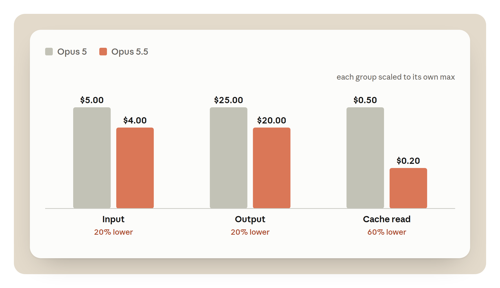
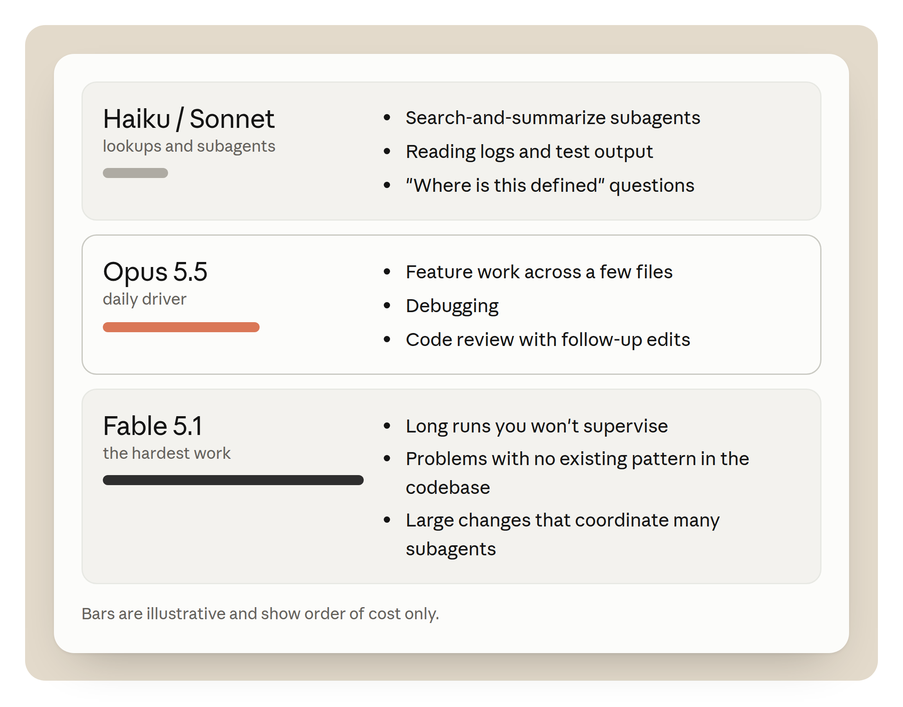

Opus 5.5는 Opus 5보다 토큰당 가격이 싸다.
우리는 수백만 토큰을 사겠다고 마음먹고 시작하지 않는다. 기능 하나를 만들고, 마이그레이션을 끝내고, 작업 하나를 돌리겠다고 시작한다. 토큰 수는 모델이 거기까지 가는 데 필요했던 만큼일 뿐이다.
토큰당 비용이 같은 두 모델이 같은 작업에서 전혀 다른 금액을 쓸 수 있다. 한 모델은 코드를 한 번만 읽는다. 다른 모델은 읽고, 수정을 시도하고, 다시 읽는다. 이 단계 하나하나가 턴(turn)이고, 턴마다 그때까지의 대화를 다시 보낸다. 그래서 턴이 더 많이 필요한 모델이 같은 가격에서도 더 비싸다.
이 글을 다 읽고 나면 자기 작업에 대해 세 가지 질문에 답할 수 있어야 한다.
먼저 짚고 싶은 트레이드오프가 있다. 토큰을 덜 쓰는 모든 방법은 작업을 끝내지 못하는 대가를 치를 수도 있다. 낮은 effort, 더 작은 모델, 더 적은 컨텍스트는 분명 토큰을 아낀다. 하지만 재시도 한 번은 그 절약분보다 더 비싸다. 이 글은 각 트레이드오프에 가격표를 붙여 보려는 시도다.
여기 나오는 숫자 중 일부는 정가(list price)이고, 일부는 그 정가로 만든 예시다. 원문의 그림은 인터랙티브하니 읽으면서 입력값을 바꿔 보자. 모두 최선을 다한 예시일 뿐이니, 문서와 자기 계산을 꼭 확인하자.
Claude Code의 작업은 루프다. 모델이 대화를 읽고, 툴을 호출하고, 결과를 읽고, 끝날 때까지 다시 한 바퀴 돈다. 루프 한 바퀴가 요청 하나다. 이 루프의 비용을 정하는 건 네 가지다.
턴. 턴마다 그때까지의 대화를 다시 보낸다. 턴이 적을수록 처리하는 입력이 적다.
캐시 읽기. 턴이 다시 보내는 것의 대부분은 모델이 바로 전 턴에서 본 텍스트다. 이건 캐시 읽기(cache read)로 과금되며, 입력 가격의 작은 일부만 낸다.
출력 토큰 종류. 가장 비싼 토큰으로, 입력 가격의 다섯 배다. Thinking도 출력으로 과금되므로, 답에 이르기까지 덜 추론하는 모델이 더 싸다.
모델. 모델마다 가격 페이지에 적힌 자기 가격이 있다. 고른 모델이 모든 토큰의 가격을 정한다.
이 글의 예시는 Opus 5.5 API 정가를 쓴다. 입력 100만 토큰당 $4, 출력 100만 토큰당 $20, 캐시 읽기 100만 토큰당 $0.20이다. 아래 계산기와 마찬가지로, 예시는 캐시된 입력은 읽기 가격으로, 나머지는 입력 가격으로 계산하고 캐시 쓰기는 뺐다. 토큰 수는 예시다.
어떤 작업이 20K 토큰의 컨텍스트로 시작해서, 모델이 파일과 툴 결과를 읽는 동안 120K까지 커진다고 하자. 40턴이면 평균 턴이 약 70K 토큰을 보낸다. 대화가 120K를 넘긴 적이 없는데도 작업 전체로는 약 2.8M 입력 토큰이다. 90%를 캐시에서 읽으면 입력 비용은 약 $1.62다. 같은 작업을 25턴에 끝내면 약 1.75M 토큰을 처리하고 입력 비용은 약 $1.02다.
턴 하나는 자기가 더하는 토큰보다 더 비싸다. 앞선 것을 전부 다시 보내기 때문이다. 그래서 가장 싼 턴은 필요 없는 턴이다.
턴을 줄이는 습관 하나는 모델에게 자기 작업을 검사할 방법을 주는 것이다. 예를 들어 돌릴 테스트, 빌드, 엔드포인트를 호출하는 스크립트 같은 것. 자기 작업을 검사할 수 있는 모델은 실수를 더 일찍 찾는다.
필요한 것을 한 번에 모으고 툴 호출을 묶어서 보내는 모델도 재전송 비용을 덜 낸다.
같은 2.8M 입력 토큰이 캐시에서 하나도 오지 않으면 $11.20다. 적중률 90%면 $1.62, 96%면 약 $0.99다. 입력 비용을 이만큼 움직이는 설정은 달리 없다. 꾸준히 이어지는 세션은 알아서 높은 적중률을 유지한다. 캐시를 깨지 않기 위해 피할 행동은 이 글 뒤에서 다룬다.
Opus 5.5에서 출력 토큰 하나는 캐시 읽기의 100배다. 전형적인 작업의 출력 60K 토큰은 $1.20로, 캐시에서 6M 토큰을 읽는 것과 같다. 출력에는 thinking이 들어간다. Claude Code가 요약만 보여 줘도 전부 돈을 낸다. 모델이 얼마나 생각할지를 주로 바꾸는 effort가 청구서를 그렇게 크게 움직이는 이유다.
캐시 읽기가 싼 모델은 주로 긴 세션에 도움이 된다. 출력이 싼 모델은 주로 추론이 많이 필요한 작업에 도움이 된다.
두 가지가 바뀌었다. 가격, 그리고 모델이 하는 일의 양이다.
모든 가격 항목이 낮아졌다. 입력과 출력 토큰은 Opus 5보다 20% 싸다. 캐시 읽기는 60% 싸다. 입력 가격이 내려가고, 읽기 요율도 입력 가격의 10분의 1에서 20분의 1로 함께 내려간다. 그림 A가 두 모델을 100만 토큰당으로 비교한다. 이건 API 정가다. Pro, Max, Team 플랜에서는 낮아진 Opus 5.5 가격이 캐시된 컨텍스트까지 포함해 사용 한도에 반영되므로, Opus 5보다 약 25% 더 멀리 간다. 캐시 읽기의 추가 인하는 API 가격 변경이다.
별개로 Pro, Max, Team, 좌석 기반 Enterprise 플랜의 5시간 한도가 올라갔고, 대상 구독자는 원할 때 쓸 수 있는 한도 리셋을 받는다. 터미널의 Claude Code가 아니라 웹이나 Claude Desktop의 Settings > Usage에서 찾을 수 있다. 리셋은 Claude Code를 포함해 계정 전체에 적용된다.

API 키로 쓸 때 Claude Code에 가장 중요한 건 캐시 읽기 가격 인하다. 긴 에이전틱 세션은 입력의 대부분을 캐시 읽기에 쓴다. 아래 그림 B에서 가격을 매긴 세션에서는 캐시 항목이 $1.00에서 $0.40으로 떨어지는데, 영수증에서 가장 큰 하락이다.
얼마나 아끼는지는 작업의 모양에 달렸다. 대부분이 캐시 읽기인 세션은 입력에서 최대 60%를 아낄 수 있다. 캐시가 없고 답이 긴 짧은 질문은 출력이 지배하므로 최대 20%다. 대부분의 Claude Code 작업은 둘 사이에 있다. 아래 계산기가 당신의 작업이 어디쯤인지 보여 준다.
Opus 5.5가 Opus 5보다 돌리는 데 40% 덜 든다는 말을 봤을지 모른다. 그건 기본 설정에서 토큰 단위로 과금되는 전형적인 워크로드에 대한 우리의 추정치다. 낮아진 가격에 더해 Opus 5.5가 기본값인 medium에서 작업당 토큰을 덜 쓴다고 가정한 것이므로, 토큰 가격이 40% 깎였다는 뜻이 아니다. 토큰 가격은 그림 A의 것이고, 그림 B는 가격 변경만으로 어떻게 되는지 보여 준다.
Opus 5.5는 답하기 전에 항상 생각하므로 답 하나에 더 많은 토큰을 쓸 수 있다. Opus 5.5에서 더 많은 일을 해낼 거라 기대하지만 작업마다 다르니 자기 작업에서 재 보자. 그림 C가 두 모델의 작업당 비용을 비교한다. 이 부분은 가격보다 당신의 작업에 훨씬 더 좌우된다.
범위가 잘 잡힌 작업에서는 두 모델이 비슷한 턴 수에 끝나므로 얻는 건 가격 인하뿐이다. 모델이 잘못된 아이디어에 많은 턴을 쓸 수 있는 열린 작업에서 차이가 가장 클 것이다. 모든 코드베이스에 통하는 숫자 하나는 없으니 직접 재 보자(마지막 절 참고).
긴 실행은 보고로 끝난다. Opus 5.5는 긴 실행을 무엇을 바꿨고, 무엇을 찾았고, 당신에게 무엇이 필요한지로 마무리한다. 이것도 돈을 아낄 수 있다. 무슨 일이 있었는지 볼 수 있으면 세션을 다시 돌리는 일이 줄기 때문이다.
그림 B는 같은 토큰 수로 세션 하나를 두 모델에서 가격 매긴다. 그러니 차이는 가격 변경뿐이고 다른 건 없다. 원문에서는 모델을 전환해 비교할 수 있다. 토큰 수는 예시다.
| 항목 | 토큰 | Opus 5에서 | Opus 5.5에서 |
|---|---|---|---|
| 캐시에서 읽기 | 2.0M | $1.00 | $0.40 |
| 새 입력 | 200K | $1.00 | $0.80 |
| 출력 | 60K | $1.50 | $1.20 |
| 합계 | $3.50 | $2.40 |
영수증에는 /usage가 세션에 대해 보여 주는 세 항목이 있다. 캐시 읽기가 토큰으로는 가장 큰 항목으로 2M이다. 출력은 토큰으로는 가장 작고 비용으로는 가장 크다. 새 입력은 그 사이에 있다. 각 파일의 첫 읽기와 새 툴 결과 하나하나가 여기에 든다.
그림 B는 두 모델에 같은 토큰 수를 주므로 가격 변경만 보여 준다. 당신의 세션은 Opus 5.5에서 토큰을 더 쓸 수도, 덜 쓸 수도 있다. 이렇게 가격을 매기면 세션은 약 31% 싸다.
실제로 기록한 실행에는 두 번째 효과, 즉 모델이 하는 일의 양 변화가 더해진다. 헛발질이 있는 작업에서는 차이가 더 벌어질 것이다.
자기 작업 하나가 쓰는 양을 넣거나, 프리셋에서 시작하자. 프리셋은 어디까지나 예시이니 그래도 자기 계산을 해 보길 권한다. 캐시된 입력은 캐시 읽기 가격, 새 입력은 입력 가격으로 계산하므로 캐시 슬라이더가 차이 중 얼마가 캐시 읽기에서 오는지 보여 준다.
실제 세션으로 슬라이더를 채우려면 작업이 끝날 때 /usage를 실행하자. Session 블록이 입력, 출력, 캐시 수치를 준다. 마지막 슬라이더는 Opus 5.5가 당신의 작업에서 일을 얼마나 덜 하는지에 대한 당신의 가정이다. 가격 변경만 보려면 0%로 두자. 자기 작업으로 정하려면 이렇게 한다. 같은 작업을 Opus 5와 Opus 5.5에서 돌리고 턴 수와 출력 토큰을 비교한다. 직접 재 보기가 그 과정을 안내하고, 세션 읽기가 /usage에서 무엇을 볼지 보여 준다.
프리셋: 전형적인 Claude Code 세션 · 작은 수정 · 큰 리팩터 · 긴 에이전틱 실행
| 입력값 | 기본값 | 설명 |
|---|---|---|
| 입력 토큰 | 2.2M | 캐시 여부와 상관없이 모든 턴에 걸쳐 모델에 보낸 전부. |
| 캐시에서 읽은 비율 | 91% | |
| 출력 토큰 | 60K | 출력으로 과금되는 thinking을 포함. |
| 하루 작업 수 | 10 | |
| Opus 5.5에서의 토큰 변화(당신의 가정) | 0% | 가격만 보려면 0%로. Opus 5.5는 Opus 5보다 토큰을 더 쓸 수도 덜 쓸 수도 있으니 자기 작업에서 재 보자. |
| 결과 | 작업 1건 | 한 달 |
|---|---|---|
| Opus 5, 이 토큰으로 | $3.50 | $770 |
| Opus 5.5, 이 토큰으로 | $2.40 | $528 |
| API 정가 기준 변화 | −31% | 가격만으로 한 달에 $242 절약 |
Opus 5.5의 낮아진 가격은 토큰 하나하나를 싸게 만든다. 토큰을 얼마나 쓰는지는 세션을 어떻게 운영하느냐가 정하며, 아래 단계가 도움이 된다.
effort는 모델이 턴마다 토큰을 얼마나 쓸지에 대한 전반적인 성향을 정한다. thinking, 쓰는 텍스트, 툴 호출 모두에 걸친다. effort가 낮으면 툴 호출을 덜 하고 더 짧게 유지한다. Opus 5.5에는 네 단계(low, medium, high, xhigh)가 있고, 단일 세션용 max가 더 있다. 아래에서 단계를 골라 언제 쓰는지와 설정 명령을 보자.
| 단계 | 한 줄 태그 | 언제 쓰나 | 비용 |
|---|---|---|---|
low | 기계적인 일 | Low: 계획이 분명한 일에. 이름 바꾸기, 여러 파일에 패턴 적용하기, 한 줄로 설명할 수 있는 변경. 턴당 가장 적게 생각한다. | 턴당 가장 적게 생각하므로 턴당 비용이 가장 싸다. |
medium | 일상 | Medium: 범위가 잘 잡힌 일상 작업에. 범위가 분명한 일상 업무. high보다 턴당 덜 생각하므로 턴당 비용이 더 싸다. | 작업 범위가 잘 잡혔다면 여기서 시작하자. |
high | 막히면 | High: medium이 막혔을 때 가장 먼저 시도할 것. 같은 모델에서 턴당 더 많이 생각한다. medium보다 턴당 비용이 더 들지만 더 큰 모델로 옮기는 것보다는 싸다. 변경이 두 계층에 걸치는데 medium이 한 계층만 고쳤다면 high를 시도하자. | medium보다 턴당 비용이 더 든다. 재시도 한 번을 아낄 때 값어치를 한다. |
xhigh | 어려운 문제 | Xhigh: high로도 안 풀리는 문제에. 한 번 더 많이 생각한다. xhigh가 같은 문제에 두 번 부딪히면 Fable 5.1로 옮기자. | 턴당 출력이 더 많고 응답이 더 느리다. |
max | 세션 하나 | Max: 단일 세션용. 상시 기본값이 아니라 세션 단위로 쓸 수 있다. 어려운 작업 하나에 쓰고 다시 내리자. | 턴당 출력이 가장 많다. 한 번에 작업 하나에만 쓰자. |
명령: /effort <level> · /effort status · /model · /usage
Claude Code는 모델마다 기본 단계를 정해 두고, /effort status가 당신의 단계를 보여 준다. 범위가 잘 잡힌 일상 작업에는 medium을 써 보자. medium이 막히면 high를 시도하자. medium보다 턴당 더 쓰지만 더 큰 모델로 옮기는 것보다는 덜 쓴다. 이름 바꾸기나 알려진 패턴을 여러 파일에 적용하기 같은 기계적인 일에는 low를 쓰자.
Opus 5.5의 기본값은 medium으로, Opus 5의 기본값 high보다 한 단계 아래다. 단계가 모든 모델에서 같은 양의 생각을 뜻하지는 않는다. 같은 단계에서 Opus 5.5는 Opus 5보다 턴당 더 많이 생각하며, xhigh와 max에서 특히 그렇다. 그러니 Opus 5용으로 골랐던 단계를 그대로 가져오지 말자. medium에서 시작하고, xhigh와 max는 효과를 측정한 작업에만 아껴 두자.
effort 가격을 대략 생각하는 법은 이렇다. high가 작업 전체에 걸쳐 thinking 토큰 20K를 더한다고 하자. Opus 5.5에서는 $0.40이다. 캐시된 컨텍스트 100K에서 열 턴을 도는 재시도 루프에 출력 토큰이 총 10K면 비용이 거의 같다. 그러니 high는 재시도 한 번을 아끼는 작업에서 제값을 한다. medium이 한 번에 끝냈을 작업에서는 낭비다.
effort를 더 올려야 한다는 가장 분명한 신호는 한 계층에서 멈추는 수정이다.
API 핸들러에서 필드 이름이 바뀌었다고 하자. medium에서 모델은 핸들러를 고치고, 핸들러의 테스트는 통과하고, 클라이언트는 여전히 옛 필드를 보낸다. 시킨 일은 했다. 두 번째 호출자를 찾을 만큼 멀리 읽지 않았을 뿐이다. high에서는 쓰기 전에 호출 지점을 읽는 데 더 많은 턴을 쓰고, 두 계층을 한 번에 고친다.
검사가 같은 버그를 잡을 수도 있다. 모델이 클라이언트를 거치는 테스트를 돌릴 수 있다면, 옛 필드는 medium에서도 그 필드를 쓴 턴에 바로 테스트를 실패시킨다. 그러니 effort를 올리기 전에 모델에게 자기 작업을 검사할 방법이 있는지 확인하자. 테스트 실행은 턴 하나와 그 출력만큼 든다. effort를 올리면 모든 턴에 thinking이 더해진다.
effort 단계를 올리고 검사를 추가해도 안 되면, 그때 더 큰 모델로 바꾸자.
Claude Code에서는 /effort에 단계를 붙여 실행한다. 예를 들어 /effort high. /effort status는 현재 단계를 출력한다. 작업 중간에 바꿀 수 있고, 새 단계는 다음 요청부터 적용된다.
API 키나 Claude 구독으로 쓰는 Opus 5.5에서는 effort를 바꿔도 캐시가 유지된다. 어려운 단계 하나를 위해 올렸다가 대화를 다시 쓰지 않고 다시 내릴 수 있다. Amazon Bedrock, Google Cloud의 Agent Platform, Claude 앱 게이트웨이에서는 effort 변경이 여전히 캐시된 대화를 비우며, 다음 요청이 전체에 캐시 쓰기 가격을 낸다. Opus 5.5는 thinking이 항상 켜져 있으므로 바꿀 thinking 설정은 없다.
모델 선택은 세션의 모든 토큰 가격을 정하므로 effort보다 청구서를 더 크게 움직인다. 영향도 더 멀리 미친다. 메인 모델을 물려받는 모든 서브에이전트가 그 가격도 물려받는다. 대부분의 날에는 모델 셋이 필요하다. 조회용 작은 모델, 가까이서 지켜보는 작업용 Opus 5.5, 가장 어려운 작업용 더 큰 모델.

Opus 5.5는 당신이 지켜보는 작업에 쓰자. 몇몇 파일에 걸친 기능 작업, 디버깅, 후속 수정이 따르는 코드 리뷰. 모델이 하는 일을 읽고 벗어나면 끼어드니 루프가 짧게 유지된다.
결과가 토큰 가격보다 중요할 때 Fable 5.1로 올라가자. 예를 들어 지켜보지 않을 긴 실행, 코드베이스에 기존 패턴이 없는 문제, 여러 서브에이전트를 조율하는 큰 변경. 세 번째 실패까지 기다리지 말자. Opus 5.5가 xhigh에서 같은 문제에 두 번 부딪히면 바꾸고, 풀리면 다시 돌아오자. 인터랙티브한 작업에는 지연이 낮고 비용이 싼 Opus 5.5가 더 잘 맞는다.
Fable 5.1의 정가는 입력 100만 토큰당 $10, 출력 100만 토큰당 $50으로 Opus 5.5 가격의 2.5배다. 캐시 읽기는 100만 토큰당 $0.25로 Opus 5.5 요율의 1.25배에 그치는데, 입력 가격의 0.025배로 과금되기 때문이다. 그러니 차이는 길고 캐시가 많은 실행에서 가장 작고, 많이 쓰는 작업에서 가장 크다.
자연스러운 끊김에서 바꾸자. 캐시는 이전 모델의 것이므로 새 모델의 첫 턴은 대화 전체에 쓰기 가격을 낸다고 생각하자. 그 턴을 작게 만들려면 먼저 /compact를 돌리거나, 짧게 쓴 계획으로 새 세션을 시작하자. 별칭이나 모델 이름을 붙여 /model을 실행해 바꾼다. /model은 선택을 새 세션의 기본값으로도 저장하므로, 어려운 부분이 끝나면 다시 돌려 놓자.
Sonnet이나 Haiku로 내려가는 건 코드를 쓰기 위해서가 아니라 조회를 위해서다. 검색하고 요약하는 서브에이전트, 로그와 테스트 출력 읽기, "이거 어디서 정의됐지" 같은 질문. 여러 파일에 걸친 기계적인 수정에는 Opus 5.5를 유지하고 effort를 low로 두자. 수정은 나머지 코드를 쓰는 모델에 남아 있으면서 턴당 비용은 낮아진다.
서브에이전트를 작은 모델에 올리려면 정의에 model: haiku나 model: sonnet을 적는다. 모든 서브에이전트를 한 모델에 올리려면 CLAUDE_CODE_SUBAGENT_MODEL 환경 변수를 설정한다. 서브에이전트 정의에 적힌 모델이 변수보다 우선한다. 모델 설정이 없는 서브에이전트는 변수가 설정돼 있지 않은 한 메인 모델로 돈다.
각 서브에이전트는 자기 컨텍스트 윈도우에서 돌고 요약을 돌려주므로, 파일 읽기가 메인 대화 밖에 머문다. 그래도 자기 토큰은 자기가 내므로, 모델 설정이 그 지출의 가격을 정한다.
실험 기능인 에이전트 팀은 이걸 곱절로 만든다. 팀원 하나하나가 자기 컨텍스트 윈도우를 가진 별도의 Claude Code 인스턴스이고, 종료할 때까지 토큰을 계속 쓴다. 비용 문서는 팀원들이 plan 모드로 돌 때 팀 하나가 표준 세션의 약 7배 토큰을 쓴다고 본다. 팀은 작게, 작업은 각각 독립적으로 유지하고, 맡은 부분이 끝나면 팀원을 내리자.
트레이드오프는 이렇다. 검색 결과를 잘못 읽은 작은 모델이 메인 모델을 엉뚱한 파일로 보내고, 그 우회 비용은 메인 모델이 낸다. 작은 모델은 파일 찾기, 테스트 돌리기, 로그 읽기처럼 실수를 싸게 알아챌 수 있는 일에 두자.
판단이 필요한 결정은 메인 모델에 두자. opusplan 별칭은 일을 다른 식으로 나눈다. Opus가 plan 모드에서 계획하고, Sonnet이 계획을 실행한다. 이러면 코드 수정이 Sonnet에 가므로 위 조언과 반대다. 기본값으로 삼기 전에 자기 작업에서 재 보자.
옛 모델용으로 쓴 지시가 Opus 5.5를 더 많이 쓰고 툴 호출을 반복하게 만들 수 있다. Claude Code에서 /claude-api prompt-audit을 실행해 스킬과 CLAUDE.md 파일 같은 Claude Code 설정에 이런 프롬프팅 안티패턴이 있는지 점검하자. Claude Platform 위에 만든 앱의 코드도 점검한다.
우리는 이걸 Opus 4.8에서 Opus 5.5로의 마이그레이션에서 시험했다. 이런 패턴이 여럿 든 프롬프트를 쓰는 44건짜리 사내 고객 지원 벤치마크였다. low effort의 Opus 5.5로 옮기는 것만으로 벤치마크 비용이 약 18% 줄었다. prompt-audit을 돌리자 9%가 더 줄어 Opus 4.8 출발점보다 약 25% 아래가 됐다. 감사는 모델이 더 많이 쓰고 툴 호출을 반복하게 만드는 의례적인 지시를 걷어냈다. 필수 6단계 절차, 스크래치패드 규칙, 두 번 검증 규칙, 서로 모순되는 지시들이었다.
이 결과는 벤치마크 하나에서 나온 것이니 기대할 숫자가 아니라 예시로 보자. 감사를 돌린 뒤, 실제 작업에서 전후의 /usage를 비교하자(직접 재 보기 참고).
캐싱과 압축(compaction)은 Claude Code가 알아서 처리한다. 얼마나 아끼는지는 세션을 어떻게 운영하느냐가 정한다.
Claude Code는 시스템 프롬프트, 툴 정의, 지금까지의 대화처럼 요청에서 반복되는 부분을 캐시한다.
Opus 5.5에서 캐시 읽기 하나는 새 입력 토큰의 5%다. 캐시에 쓰는 건 새 읽기보다 비싸서, 현재 가격으로 5분 캐시는 입력 가격의 1.25배, 1시간 캐시는 2배다. 적중할 때마다 수명이 무료로 다시 시작된다.
Claude Code에서 수명은 결제 방식에 따라 다르다. Claude 구독이면 1시간이다. API 키나 클라우드 제공자면 기본 5분이고, 구독도 사용 크레딧을 끌어 쓰기 시작하면 5분으로 떨어진다.
컨텍스트 120K 토큰에서 Opus 5.5의 5분 쓰기는 약 $0.60, 읽기는 약 $0.02다. 쓰기 한 번이 읽기 25번만큼 든다. API 키에서는 6분짜리 커피 휴식이 다음 $0.02 읽기를 $0.60 쓰기로 바꾼다. 같은 크기의 1시간 쓰기는 약 $0.96이고, API에서는 하루 중 빈 틈을 메우려고 이 프리미엄을 낼 수 있다.
캐시는 접두사(prefix)를 저장하므로, 요청이 이전 요청과 처음부터 일치하는 부분만 재사용할 수 있다.
꾸준히 이어지는 세션은 턴마다 대화 끝에 덧붙이므로 적중률이 높게 유지된다. 요청의 앞부분을 바꾸는 것은 무엇이든 적중률을 낮춘다. 툴 정의를 바꾸면 캐시 전체가 비워지고, 시스템 프롬프트를 바꾸면 그 지점부터 비워지는데 그건 거의 전부다.
실제로 캐시 쓰기가 생기는 때는 이렇다.
그러니 이런 것들은 세션이 시작할 때 설정해 두고, 일하는 동안에는 건드리지 말자.
턴마다 전체 컨텍스트를 다시 보내므로, 캐시가 따뜻해도 컨텍스트가 커질수록 턴이 비싸진다. 컨텍스트 20K 토큰에서 턴 하나의 캐시 읽기는 Opus 5.5에서 약 $0.004다. 150K에서는 약 $0.03이고, 그 크기로 30턴이면 읽기만으로 $0.90이다. 같은 30턴을 20K에서 하면 약 $0.12다. Claude 4.6 이후 모델에서는 더 큰 컨텍스트 윈도우가 토큰당 가격을 바꾸지 않으므로, 비용은 전부 대화를 다시 보내는 데서 나온다.
그 컨텍스트의 많은 부분은 앞선 작업의 잔재다. 한 시간 전의 스택 트레이스, 이미 다 본 파일, 이미 고친 테스트 실행의 출력. 전부 턴마다 계속 보내진다.
세션이 컨텍스트 한계에 가까워지면 Claude Code가 오래된 히스토리를 요약해서 이후 턴이 덜 보내게 한다. 컨텍스트가 얼마나 차야 그렇게 할지 바꾸려면 토큰 수를 붙여 /autocompact를 실행하자.
직접 할 수 있는 명령이 둘 있다. /clear는 대화를 비우고 비용이 없으니, 무관한 작업으로 옮길 때 쓰자. /compact는 연속성을 유지하고 요청 하나만큼 든다. 요약할 대화를 읽으며, 무엇을 남길지 말해 줄 수 있다. 예를 들어 /compact 실패하는 테스트 이름과 스키마 변경을 남겨.
150K 토큰에서 압축하는 대략적인 가격은 약 $0.25다. 읽기, 몇천 출력 토큰의 요약, 짧아진 컨텍스트에 대한 새 캐시 쓰기가 들어간다. 이후 턴마다 읽기에서 약 $0.025를 아끼므로 압축은 열 턴쯤 안에 본전을 뽑는다. 끝내기 직전의 압축은 아끼는 것보다 더 든다.
그 가격은 캐시가 따뜻하다고 가정한 것이다. 캐시가 따뜻한 동안에는 요약 요청이 대화를 캐시에서 읽으므로, 휴식 뒤가 아니라 휴식 전에 압축하자. 캐시 수명보다 긴 휴식 뒤에는 같은 /compact가 대화 전체를 다시 읽고 캐시에 다시 쓴다. 5분 캐시에서 150K 토큰이면 입력만 약 $0.75다. 버리고 싶은 길로 들어섰다면 대신 /rewind로 앞선 턴으로 돌아가자. 캐시가 따뜻한 동안에는 이미 캐시된 접두사로 돌아간다.
요약은 세부도 잃는다. 디버깅 세션 한가운데서의 압축은 정작 중요했던 로그 한 줄을 떨어뜨릴 수 있다. 자연스러운 끊김에서 압축하고, 다음 단계가 특정한 무언가에 달렸다면 /compact 지시에 그렇게 적자.
CLAUDE.md 파일은 세션 시작마다 컨텍스트에 로드되므로, 그 한 줄 한 줄이 모든 턴이 다시 보내는 것의 일부다. 비용 문서는 200줄 아래로 유지하길 권한다. MCP 툴 정의는 지연 로드된다. 시작할 때는 툴 이름과 서버 지시만 로드되고, 전체 정의는 그 툴이 쓰일 때 로드된다. /mcp를 실행해 어떤 서버가 연결됐는지 보고, 쓰지 않는 것은 끄자.
아래 표는 Claude Code 세션에 영향을 주는 나머지 과금 규칙을 문서 링크(있는 경우)와 함께 정리한 것이다.
fast 모드는 Opus 5.5를 최대 2.5배 빠르게 돌리며, 표준 가격의 두 배다. 입력 100만 토큰당 $8, 출력 100만 토큰당 $40. Claude 구독에서는 플랜 한도가 아니라 사용 크레딧에 과금된다. 켠 뒤 첫 요청은 대화 전체에 캐시 없이 fast 모드 입력 가격을 낸다. 그러니 세션 깊숙이 들어가서가 아니라 시작할 때 켜자.
| 청구서가 세는 것 | 작동 방식 |
|---|---|
| 캐시 수명 | Claude Code에서 구독이면 1시간, API 키나 클라우드 제공자, 또는 구독이 사용 크레딧을 끌어 쓰기 시작하면 5분. 적중할 때마다 수명이 다시 시작된다. API는 더 비싼 쓰기 가격으로 1시간 캐시를 제공한다. 비용 문서(Claude Code 수명)와 프롬프트 캐싱 문서 |
| 캐시 쓰기 | 현재 API 가격으로 5분 캐시는 입력 가격의 1.25배, 1시간 캐시는 2배. 가격 문서 |
| Thinking | 돌려받지 않는 thinking까지 포함해 출력 토큰으로 과금. Extended thinking 문서 |
| Effort | 텍스트, 툴 호출, thinking 등 모든 출력 토큰에 적용. Effort 문서 |
| 자동 압축 | 컨텍스트 윈도우가 한계에 가까워지면 실행. 토큰 수를 붙인 /autocompact가 임계값을 정한다. 컨텍스트 윈도우 문서 |
| 서브에이전트와 에이전트 팀 | 서브에이전트는 자기 컨텍스트 윈도우에서 일하고 요약을 돌려준다. plan 모드의 에이전트 팀은 표준 세션의 약 7배 토큰을 쓴다. 컨텍스트 윈도우와 비용 문서 |
| Batch API | Message Batches API로 보낸 요청은 입력과 출력 토큰이 반값. 배치 처리 문서 |
| 오늘날 전형적인 지출 | 평균: 엔터프라이즈 배포 전반에서 개발자당 활성일 하루 약 $13. 사용자의 90%는 활성일 하루 $30 아래. 두 수치 모두 현재 모델 기준. 공개 문서, 비용 페이지(엔터프라이즈 평균과 90% 상한) |
이 글의 수치는 예시다. 당신의 코드베이스, 프롬프트, 습관은 다르니 자기 작업에서 비용을 재자. 확인하는 법은 이렇다.
/usage를 실행한다. /cost도 같은 일을 한다. Session 블록이 토큰 사용량과 정가 기준 추정 달러 비용을 보여 준다. prompt-cache 줄이 입력 중 얼마가 캐시에서 왔는지 보여 준다. Pro, Max, Team, Enterprise 플랜에서는 같은 화면에 플랜 사용량 막대도 나온다. 달러 수치는 당신의 기기에서 정가로 계산한 것이므로, 구독에서는 청구서가 아니라 얼마나 일했는지의 가늠자다.claude update를 실행하자. 장난감 예제가 아니라 백로그에서 하나를 고르자. /model로 Opus 5와 Opus 5.5를 오간다. 각 실행의 턴 수, 출력 토큰, 비용을 적는다. 결론을 내기 전에 작업 서너 개를 해 보자.작업이 끝날 때 /usage에서 세 가지를 확인하자.
기준선으로, Claude Code 비용 문서는 엔터프라이즈 배포 전반의 평균이 개발자당 활성일 하루 약 $13이고, 사용자의 90%가 활성일 하루 $30 아래라고 한다. 자기 평소 수준보다 훨씬 비싼 세션은 되짚어 볼 가치가 있다.
/clear를, 끊김에서는 무엇을 남길지 적어 /compact를 쓴다./usage가 보고하는 것을 비교하라. 믿을 숫자는 자기 숫자다.이 글이 도움이 됐길 바란다. Opus 5.5에서 한도가 Opus 5보다 더 멀리 가지 않는다면 /feedback으로 알려 달라.
더 읽을거리: Manage costs effectively · Model configuration · Choosing a Claude model and effort level in Claude Code · Effort · Prompt caching · Maximizing the value of your Claude Code sessions
리뷰해 준 Michael Segner, Kacie Jenkins, Molly Vorwerck에게 감사를 전한다.